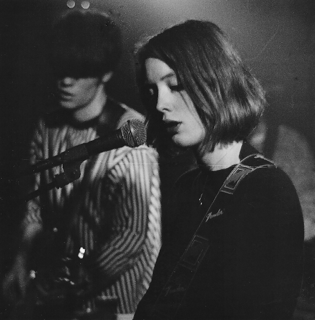

Slowdive is a dream pop/shoegaze band that formed in 1989 in Reading, England, United Kingdom. Signed to Creation Records in 1990 and initially championed by the British music press, the band scored a UK top forty entry with their debut album Just For a Day.
The band consists of Rachel Goswell (vocals/guitar), Neil Halstead (vocals/guitar), Nick Chaplin (bass), Christian Savill (guitar), and Simon Scott (drums, 1990-1994, 2014-present); additionally, Ian McCutcheon replaced Scott from 1994-1995. Goswell and Halstead had known each other since early childhood in Reading, Berkshire.
Source: Last.fm biography